JS表达式、操作符、位运算符
- 操作符： 操作符，也称为运算符，是用于实现赋值、比较值、执行算术运算等功能的符号
- 表达式： 简单理解为是由数字、操作符、变量等组成的式子，并且这个式子能求得值。
- 返回值： 表达式最终都会有一个返回结果，这个结果我们称为返回值
表达式的分类
- 在 JS 中表达式的种类非常多，这里我们主要讲解以下 5 种表达式。
- 每种表达式就有与之相匹配的操作符。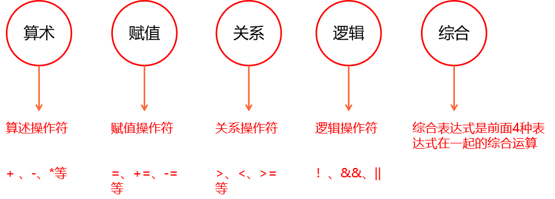
一、算术运算符
- 说到算术表达式就离不开算术运算符。
- 算术运算符：用于执行两个变量或值的算术操作符。
| 算术运算符 | 描述 |
|---|---|
| + | 加 |
| - | 减 |
| * | 乘 |
| / | 除 |
| % | 取余（取模） |
介绍
- 加减的符号和数学一致，乘法是 * 号，除法是 / 号
- %取余运算符：
- 取余运算也叫作 “求模运算” ，用百分号”%”表示
- a % b 表示，求 a 除以 b 的余数，它不关心整数部分，只关心余数
任何数%模上大于他自身的数，结果是就是这个数本身
算术运算符优先级
- 默认情况下，乘除取模的优先级要高于加减
- 不过我们可以使用圆括号
()来提升优先级，改变运算符的计算顺序。 - 这里提升优先级只能用
()，没有｛｝这一说
+号的两种作用
- 加号有 “加法” 和 “连字符” 两种作用
- 当+号两边的数都是数值时，做加法运算，否则为”连字符”(字符串的拼接)
隐式类型转换
- 如果参与
数学运算的某操作数不是数字类型，那么 JS 会自动将其转换为数字类型，然后再做计算。这一过程称为隐式转换 - 隐式转换的本质是内部自动调用了相关的函数来转换。比如我们做的是算术运算，他就会**自动调用Number()**函数，帮我们把操作数转换成数字后，再做算术计算。
- 如果参与
注意事项
- 任何数与NaN做算述运算，结果都是NaN,除与字符串拼接外。
+号参于字符串计算，他不会做隐式转换,把操作数转换为数字;而是会当成字符串拼接来处理。
><script>
> console.log(4 / "2"); // 2
> console.log(5 % "4"); // 1
> console.log(true + false); // 1
> console.log(2 + null); // 2
> // 任何类型与NaN做运算得到NaN,与字符串拼接除外
> console.log(1 + undefined); // NaN
> console.log(1 + "true"); // '1true' 字符串拼接
></script>
显示转换
- 我们之前讲过强制类型转换，其实就是显示类型转换。
- 也就是我们自己手动的调用相关函数或方法，比如前面讲过的Number()、parseInt()、parseFloat()来转换数据类型。
数学运算时隐式转换自动调用的Number()函数将其它类型转换成数字，那 Number()实现不了的，就得手动调用其它方法来实现
+-的特殊用法- 如果
Number函数能把某个类型转换成数字，那+ 和-号也可以,且规则和number一样，能识别2 进制或 16 进制。 - 不过要特别注意
-true和-false-null这 3 个特殊情况，他们会将其转换成负数
- 如果
浮点数（小数）丢失精度
在 Javascript 中，有些小数的数学运算不是很精准.所以不要直接判断两个浮点数是否相等
- JavaScript 使用了 IEEE754 二进制浮点数算术标淮，这会使一些个别的小数产生”丢失精度”问题。
- IEEE754 二进制浮点数算术标淮是计算机底层编译标准，了解即可。
解决浮点数运算不精准办法
- 小数运算时，运算后的结果,再调用
toFixed()方法保留指定的小数位数；toFixed()方法的返回值类型，是字符串类型toFixed()在指小数位时，会采用4 舍 5 入
二、赋值表达式
赋值操作符：就是给变量赋值用的
赋值操作符 描述 = 赋值 +=、-=、*=、/=、%= 快捷赋值 ++ 自增运算 – 自减运算
- 赋值运算符
=- 赋值运算符：会将等号右边的数值，赋值给等号左边的变量
var a=2;：将=等号右边的2赋值给左边的变量a- 赋值运算符左边只能是变量，右边既可以是变量也可以是数值
- 赋值运算也产生值,将等号后面的计算结果，作为“赋值运算的值”(因为每个表达式都有返回值)
这就意味着，可以连续使用赋值运算符
><script>
> var a, b, c;
> a = b = c = 12 + 2;
> console.log(a, b, c); // 14 14 14
></script>
- 快捷赋值（+=、-=、*=、/=、%=）
- 快捷赋值运算符：表示在原数值基础上进一步计算
快捷赋值操作符仅仅是简写语法，使用它们并不会提升性能
- 快捷赋值运算符：表示在原数值基础上进一步计算
><script>
> var a = 1;
> a += 5; // 相当于 a = a + 5;
> console.log(a); // 6
> var b = 4;
> b *= 2; // 相当于 b = b * 2
> console.log(b); // 8
> b /= 2; // 相当于 b = b / 2
> console.log(b); // 4
> b %= 2; // 相当于 b = b % 2;
> console.log(b); // 0
></script>
- ++ 自增 和 – 自减 运算符
++自增：表示在自己的基础上+1--自减：表示在自己的基础上-1++ 和 – 只能和变量搭配使用
><script>
> var a = 1;
> a++; // a++ 相当于 a = a + 1
> console.log(a); // 2
></script>
- ++a 和 a++ 的区别
- ++a 是先自增再赋值
- a++ 是先赋值再自增
><script>
> var b = 3;
> var c = ++b; // 先自增，再赋值，所以b先自增1，得到b=4,然后把4赋值给变量c，所以c的值也是 4
> console.log(c); // 4
> console.log(b); // 4
> console.log(c++); // 4 先赋值，再自增，所以打印是4，c自增后是5
> console.log(++c); // 6 先自增，再赋值，c上面已经是5，再自增就是6，自增后再赋值，所以打印是6
></script>
- –a 和 a–的区别
- 与上面同理
--a是先自减再赋值a--是先赋值再自减
三、关系表达式
- 说到关系表达式，肯定就离不开关系操作符。
- 关系操作符： 用来比较两个值之间的大小关系，如果关系成立它返回
true，如果关系不成立则返回false
关系操作符 描述 > 大于 < 小于 >= 大于或等于 <= 小于或等于 == 等于 != 不等于 === 全等于（值和类型都比较） !== 不全等于（其结果与===比较的结果正好相反）
>和<以及>=和<=
以上操作符主要是用来比较两个值的大小关系
- 如果操作符两边的操作数，都是字符串，则不会将操作数转换成数字进行比较，而会分别比较字符串的
Unicode编码- 除去操作符两边的操作数都是字符串这种情况外，其它情况在在作比较时，会先将**非数字类型转换为数字 **（隐式转换） ，然后再进行比较。 整个隐式转换过程是程序内部自动调用Number()函数来实现的
以上规则，只针对基本数据类型而言
- 操作符两边的数，不都是字符串
>// 数字与数字作比较，最简单
>1 > 2; // false
>// 数字与非数字作比较
>1 > true; // false 等价于 1>1
>// 字符串与布尔值作比较
>"" <= false; // true 等价于 0<=0
>// null 和 undefined与数字作比较
>null >= 0; // true 等价于 0>=0
>undefined <= 0; // false 等价于 NaN<=0
>// 字符串与null 和undefined作比较
>"" >= null; // true 等价于 0>=0
>"" <= undefined; // false 等价于 0<=NaN
>// null与undefined作比较
>null >= undefined; // false 等价于 0>=NaN
- 字符串与字符串做比较
- 字符串与字符串作比较时，不会将其转换成数字进行比较，而会分别比较字符串的
Unicode编码 - 比较字符编码时，是一位一位进行比较，如果两位一样，则比校下一位
- 字符串与字符串作比较时，不会将其转换成数字进行比较，而会分别比较字符串的
英文字母对应的 Unicode 编码
A~Z对应65~ 90也就是A的Unicode编码是65 、 Z 的Unicode编码是 90a~z对应97~1220~9对应48~57
>// 先把两边的第一位拿出来作比较，即 'a' < 'b' ，比较时比较的是Unicode编码，则 97<98，所以结果为 true
>"abc" < "b"; // true;
>
>// 先把两边的第一位拿出来作比较，即 '1' < '5' ，比较时比较的是Unicode编码，则49 < 53 ,所以结果为 true
>"11" < "5"; // true;
>
>// 先把两边的第一位拿出来作比较，如果两位一样，则比较下一位，所以拿第二位来比较，则'b'<'c'，比较时比较的是Unicode编码，则 98 < 99 ,所以结果为 true
>"abc" < "acd"; // true
JS 中没有连比
JS 中是没有连比的功能，我们来看下面的列子
><script>
> console.log(1 < 3 < 2); // true 但是本质上是错的，3不可能小于 2
> /*
> * 1<3<2 为什么会得到 true ?
> * 他是从左往右开始比较，1 < 3 这个表达式返回值为true
> * 再拿true与2作比较，那 true < 2
> * 数值与其它类型做比较时，会先将其转换成数字，再比较，true转数字转成 1
> * 即 1 < 2 吗 ？那肯定小于，所以返回结果就为 true
> */
></script>
那如果要判断一个数是不是> 1同时< 4，我们可以用后面学到的&&与操作符和||或操作符来实现
== 和 !=
- ==用来比较操作符两边值（隐式转换后）是否相等，在比较时，不会比较两边值的类型
- 如果值（隐式转换后）相等，返回true，不相等，则返回false
- 在比较时同样会做隐式类型转换，非数字类型会自动调用Number()函数，转成数字再比较
- 以上规则，只适用于基本数据类型
>1 == true; // true
>0 == ""; // true
>// ‘’ 转成数字是 0 false转成数字是 0 所以0==0 是true
>"" == false; // true
- !=是用来比较两个值（隐式转换后）是否不相等，如果相等返回 false,如果不相等，返回 true
**特殊情况!!**：
>null == undefined; //true
>"" ==null;//false
>0==null;//false
===和 !==
===用来比较两边的值是否全等，如果全等则为true,不全等则为false。- 全等：不仅在比较是会比较值大小，还会比较值的类型
===只有操作符两边的数长的一模一样，才会是 true，否则就是 false- 注意区分： 而前面讲的
==只会比较两个值（隐式转换后）的大小，不会比较类型。
>1 == "1"; // true 只比较值
>1 === "1"; // false 同时比较值和类型
>1 == true; // true 只比较值
>1 === true; // false 同时比较值和类型
!==不全等
!==用来比较两边值是否不全等，如果是则返回true,不是返回false!==的结果，正好是===结果的反面，如果===返回结果是true，那！==返回结果就是false
特殊的比较
>undefined == null; // true
>undefined === null; // false
>
>NaN == NaN; // false
>NaN === NaN; // false
>
>NaN !== NaN; // true
>NaN != NaN; // true
区分 = 、== 、=== 的区别
=是赋值==是比较 但只比较值===是比较 同时比较值和类型
四、逻辑表达式
| 逻辑运算符 | 描述 |
|---|---|
! |
逻辑非 否定的意思 |
&& |
逻辑与 并且的意思 |
| ` |
!非运算符
- !非运算符也叫”取反运算符”
- !非是一个单目运算符，所谓单目运算符，就是这个操作符只能有一个操作数
- 操作数可以是任何类型的
- !运算时也会用到隐式转换，如果操作数为非布尔值，其内部会自动调用Boolean函数，将其隐式转换为布尔类型的值后，再取反操作，最后将值返回。
- 所以!非运算的结果一定是布尔值
因此！我们可以通过对一个值两次取反操作，将其变为一个 Boolean 类型的值
>!true; // false
>!3; // false
>!0; // true
>!undefined; // true
总结：将基本数据类型转换为布尔值的 2 种方法
- 方法一：调用Boolean()函数来实现
- 方法二：在一个数值或变量前加!!(两次取反)操作，也可以实现
>!!3; // true;
>!!undefined; // false
&&与操作符
&&与操作符，表示并且的意思，可以对&&符号两侧的值进行与运算并返回结果&&与操作符是一种短路操作符，他有一个非常重要计算规则，就是 &&与的短路计算注意：当返回第一个表达式的值时，就不会再看第二个表达式了。第二个表达式不会被运行！
- &&与的短路计算规则
- 如果第一个操作数转为布尔值是
false，则就不会看第二个操作数了。返回结果为第一个操作数的返回结果 - 如果第一个操作数转为布尔值是
true，则会看第二个操作数。返回结果为第二个操作数的返回结果 - 上面提到的”操作数”，可以是一个表达式、值、函数、对象等任何类型
- 如果第一个操作数转为布尔值是
>false && true; // false
>1 && 2; // 2 1转换为布尔值是true，所以看第二个操作数，返回值为第二个操作数 2
>0 && 3; // 0 0转换为布尔值是false，所不看第二个操作数，返回值为第1个操作数 0
>true && alert("我能出来喽"); // 页面显示弹窗
>3 - 3 && 1; // 0 3-3结果为0,转换为布尔值是false,则不看第二个操作数，返回值为第一个操作数，第1个操作数是表达式，所以返回值为第1个表达式的返回值0
- 测试题
- 以下代码的执行后的结果是多少？
><script>
> var a = 1,
> b = 2,
> c;
> c = a < b && a++;//a<b:true，所以a++被运行,c=1,a=2
> console.log(c, a);//c=1,a=2
> c = a > b && --a;//a>b:false=c,--a不会被运行
> console.log(c, a);//c=false,a=2
> a == b && alert("a和b相等了");//a=b=2,true,运行alert
></script>
- 如何判断一个数的范围
var a = 10;
console.log(a > 5 && a < 12); // true 这个逻辑表达示的含 义是： a>5 同时 a<12 ？
console.log(a > 5 && a < 8); // false
表达式都会有一个返回值，所以我们可以用一个变量来接受表达式的返回值
><script>
> var a = 10;
> var b;
> b = a > 5 && a < 12;
> console.log(b); // true
> b = a > 5 && a + 2;
> console.log(b); // 12
></script>
- 如何判断一个值是不是 NaN
- 方法1：利用 NaN是一个不是数字的，但是数字类型，这个特性来判断
>var a = NaN;
>var _isNaN = isNaN(a) && typeof a === "number";
>consloe.log(_isNaN);
- 方法2：利用 NaN自己不等于自已 这个特性来判断
><script>
> function _isNaN(n) {
> if (n !== n) {
> return true;
> } else {
> return false;
> }
> }
> console.log(_isNaN(NaN)); // true
></script>
|| 或 操作符
||或操作符，表示或者的意思，可以对||符号两侧的值进行或运算并返回结果||或操作符是一种短路操作符，他一个非常重要计算规则，就是||或的短路计算
- || 或的短路计算规则：
- 第一个操作数转换为布尔值是
true,则就不会看第二个操作数。返回结果为第一个操作数的返回结果，第二个表达式不会被执行 - 第一个操作数转换为布尔值是
false，则就会看第二个操作数。返回结果为第二个操作数的返回结果 - 上面提到的”操作数”，可以是一个表达式、值、函数、对象等任何类型
- 第一个操作数转换为布尔值是
>true || false; // true 第1个操作数是true，则不看第2个操作数，将第1个操作数作为结果返回 true
>false || true; // true 第1个操作数是false，则看第二个操作数，将第2个操作数作为结果返回 true
>0 || 3; // 3 第1个操作数转boolean值是false，则看第2个操作数，将第2个操作数作为结果返回 3
>"" || 1; // 1 第1个操作数转boolean值是false，则看第2个操作数，将第2个操作数作为结果返回 1
>undefined || NaN; // NaN 第1个操作数转boolean值是false，则看第2个操作数，将第2个操作数作为结果返回 NaN
- 测试题
以下代码，输出的结果？
><script>
> var a = 1,
> b = 2,
> c;
> c = a < b || a++;//c=ture,a++不会被执行
> console.log(c);
> c = a > b || a--;//c=1,a=0,先赋值后自减
> console.log(a, c);
></script>
逻辑操作符优先级
逻辑操作符优先级是：
！非>&& 与>|| 或自己写代码的时候，建议加括号增强可读性
>(1 && false) || (4 && 5); //false||5-->5
>(1 && 2) || (4 && 5); //2||5-->2
>(1 && true) || (!"" && 2);//true||2-->true
五、综合表达式
- 综合表达式：就是 算术操作符、赋值操作符、关系操作符、逻辑操作符出现在同一个表达式中。
- 那这些操作符混在一起使用，他们的优先级就显得很重要。
操作符的优先级，从上往下，优先级从高到低，如下：
++和--运算符- 非运算符(!)
- 算术运算符( %、/、* 、+、-,先乘除取模再加减)
- 关系运算符(>、<、>=、<=、== 、!=、
===、!==) - 逻辑运算符(
&&>||) - 赋值运算符（=、+=、-=、/=、%=）
- 单目运算符优先级较高
- 当自增
++、自减--运算符遇到逻辑运算符时，要注意：由于短路特性，它需要先看左边的结果
综合表达式的计算规则
- 如果操作符优先级一样，则从左往右算
- 可以用()来改变优先级,改变计算顺序
- 为了提高代码可读性，在实际开发中，我们都会添加()，这样能更直接的知道代码的执行顺序
测试题
测试题1
><script>
> var a = 0,
> c;
> c = !3 + 4 / 2 > 5 && ++a;
>//!->/->+-> >,即：false+2>5,**注意**此时false自动转换为0,2>5为false,c=false && ++a,由于左边是false，所以++a不会被执行,c=false,a=0
> console.log(c, a); // false 0
></script>
测试题2
><script>
> var a = 10;
> var b = a++ && a < 11 || a++;
>//a++先将10赋值给&&,然后自增a=11,即true&&false,-->false||a++,此时a将11赋值给||,所以b=11,然后a自增,a=12
> var c = a + 1 && a + 2;
>//c=13&&14,c=14
> console.log(b, c, a); // 11 14 12
></script>
var b = a++ && a < 11 || a++;这步的顺序很重要，
- 所有操作符优先级
- 关于每一个运算符的详细优先级，可以参考下面这张图
- 在下图中，越在最上面的，优先级越高，越优先计算。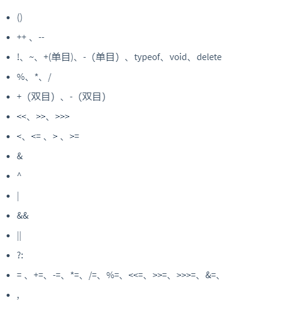
六、三元(条件)运算符
- JavaScript 中提供了一种叫做 “三元运算” 的语法形式，让我们可以方便地实现选择
- 他更像是if..else语句的紧凑版
条件表达式 ? 表达式1 : 表达式2;
执行流程
- 首先对条件表达式进行求值
- 如果条件表达式的值为 true，则执行语句 1，并返回执行结果
- 如果条件表达式的值为 false，则执行语句 2，并返回执行结果
注意事项
- 三元运算符，虽然回有返回结果，但我们并不一定要用一个变量来接受，有些时候，我们并不关心他的返回值
>var a = 2;
>// 这种情况下，我们更关心，满足条件要做什么事，不满足条件做什么事，并不关心返回结果
>a > 1 ? alert(a + "大于1") : alert(a + "小于1");
>// 同时这种情况，不管 a>1 是真是假，最终返回结果都是undefined,因为 alert() 方法返回值是undefined
>var b = a > 1 ? alert(a + "大于1") : alert(a + "小于1");
>console.log(b); // undefined
实战案例：补 0 操作
- 当我们获取当前日期时，如果计算得到的日，月小于 10 的时候，都会以一位数的方式显示，如：2022年8月17日，而我们希望以两位的方式显示，如：2022年08月17日
- 这个时候就会涉及到补 0 的问题了。
通过三元运算符判断，并执行加0操作
>// 完整的补0后效果
>// var date = new Date("2019/1/3");
>var date = new Date();
>var year = date.getFullYear(); // 获取完整的年份(4位)
>var month = date.getMonth() + 1; // date.getMonth()获取当前月份(0-11,0代表1月),所以要加1
>var day = date.getDate(); // 获取当前日(1-31)
>month = month < 10 ? "0" + month : month; // 月份小于10，数字前补0
>day = day < 10 ? "0" + day : day; // 日小于10，数字前补0
>var currentDate = year + "年" + month + "月" + day + "日";
>console.log(currentDate); // 2022年08月17日
七、综合案例
判断当前输入年份，是否是闰年 ?
需求分析：
- 公历闰年的简单计算方法（符合以下条件之一即可）
- 能被 4 整除且不能被 100 整除
- 能被 100 整除也能被 400 整除
- 1950-2050 年之间的闰年有: 1952、1956、1960、1964、1968、1972、1976、1980、1984、1988、1992、1996、2000、2004、2008、2012、2016、2020、2024、2028、2032、2036
代码实现思路：
- 利用 prompt() 弹出输入框，让用户输入年份
- 定义变量 var year 来接受，用户输入的年份
- 对接收到的值做判断，判断条件就是需求中提到的，两个条件中有一个满足就可，所以选择||操作符
- 判断表达式： 左边条件 1 ||右边条件 2
>var y = parseInt(prompt("请输入年份"));
>var a = (y % 4 == 0 && y % 100 != 0) || (y % 100 == 0 && y % 400 == 0);
>a == true ? alert("是闰年") : alert("不是闰年");
>// alert(y + "是闰年吗？" + a);
八、小结
由于在进行==数学运算==时，会自动调用Number函数进行隐式转换，所以要注意一些特殊值的转换
- Number(“”); // 0
- Number(“ “); // 0
- Number(true); // 1
- Number(false); // 0
- Number(null); // 0
- Number(undefined); // NaN
使用
==时
根据上一条的转换，正常的情况：- 0 == “”; // true
- “” == false; // true
特殊情况
- null == undefined; 结果为true
- “”==null ; 结果为false
- 0==null ; 结果为false
九、位运算符（难点-大厂必考）
位运算符都可以去掉小数
前情提要：二进制知识点
正十进制如何转二进制
- 10 进制转 2 进制，就是用当前数除 2 取余数的方式得到的
- 如求 5 的二进制
- 5/2=2 余 1 得到右边第 1 位
- 2/2=1 余 0 得到 右边第 2 位
- 1/2=0 余 1 得到 右边 第 3 位
最后商为 0 时， 把所有从上往下的余数==从右往左==写出来就是最后的二进制数101十进制转x进制，就把十进制的值除以x直至余数为0，将得到的余数从右往左排列
位运算符只有32位，从右到左位数递增，最左边的是第32位，是最高位
二进制如何转换成十进制
计算公式
b0表示二进制右边第1位上的数字b1表示二进制右边第2位上的数字b2表示二进制右边第3位上的数字- ……依次类推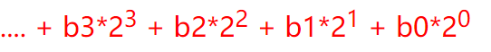
举例：
00000000000000000000000000000101转换为十进制
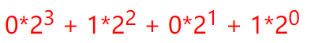最低位的平方值是0！
- 负十进制数如何转换成二进制
- 负数和正数的存储方式不一样，负数是以一种二补数(或补码)的二进制编码存储。
- 我们来看下，负数是如何转成对应二进制数，然后存储的。这里以
-5来为例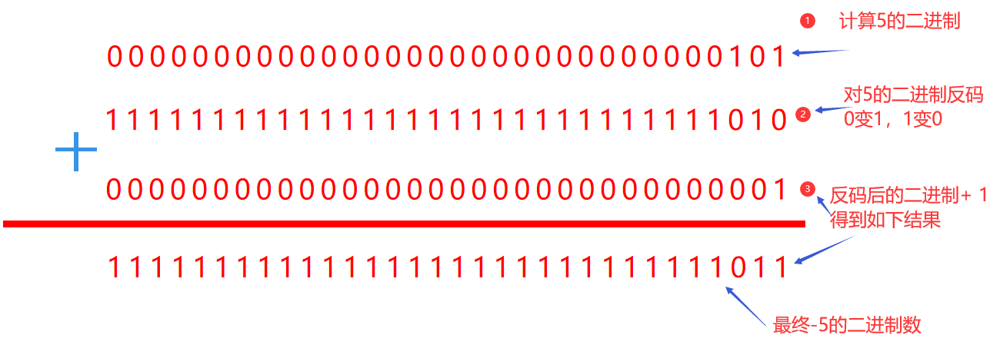
-5的二进制计算过程：
- 第一步：暂时去掉负号，先将正数的
5转换为二进制，得到00000000000000000000000000000101- 第二步：反转每一位的二进制数，即 1 变成 0，0 变成 1,得到
11111111111111111111111111111010- 第三步：把上面反转得到二进制
+1，就得到了最后负数的二进制
验证方法：
>var a = 0b11111111111111111111111111111011; // js中2进制数以0b开头
>console.log(a >> 0); // -5
如何一眼区分二进制数是正数还是负数
- 有符号整数使用 32 位的前 31 位表示整数值，第 32 位表示数值的符号，如果 32 位是
0，表示正数，如果是1表示是负数。 - 第
32位称为符号位，他的值决定了数值其余部分的格式。 - 正数以真正的二进制格式存储，而负数是以我们上面提到的补码的二进制编码存储的。
- 有符号整数使用 32 位的前 31 位表示整数值，第 32 位表示数值的符号，如果 32 位是
最终版，二进制如何转换成十进制
- 拿到一个二进制数，首先看第 32 位是 0 还是 1
- 如果是
0，就按正二进制转十进制方式转 - 如果是
1，则就按负十进数转二进制的方式，反转回去，步骤倒放
| 十进制转二进制 | 二进制转十进制 | |
|---|---|---|
| 正数 | 除2取余,从右到左 | 公式法 |
| 负数 | 除2取余+ 反转+1法 | -1反转法 + 公式法 |
正二进制转十进制
var num4 = 00000000000000000000000000011001;
- 1、num4 的二进制，第 32 位是 0，则是一个正数，按正常的正二进制转十进制方式转 1
- 2、num4 对应 10 进制计算公式= 1+0+0+123+124 = 1+8+16 = 25
负二进制转十进制
var num1 = 11111111111111111111111111111101;
- 1、num1 的二进制第 32 位是 1，则是一个负数，负数就要以补码的方式反转回去
- 2、先拿二进制
11111111111111111111111111111101-1 得到11111111111111111111111111111100二进制如何做减法：
-1就是减1的二进制数- 和数学一样，不够的话往前借，数学是十进制，借到的是
10,二进制借到的是2
- 3、再把上面得到的二进制反码回去，0 变 1，1 变 0，得到
00000000000000000000000000000011，此时得到的是正数的二进制- 4、所以可以用正数的公式法：
1*2+1*1=3，因为是负数，所以最后结果为-3
位运算符
基础知识
- 位运算的操作数，都会被转成==32位==
bit的整数（32 位的二进制数）,再做运算 - 速度是
T0（最高，速度最快）级别的，因为是在二进制下进行运算的。
- 位运算的操作数，都会被转成==32位==
按位与
&操作符&与位操作符会先把值转换为32位整数（二进制数），然后再进行位操作。- 按位
&就是将两个操作数的每一位对齐，然后按下表中的规则，对每一位执行相应的操作第一个数值的位 第二个数值的位 结果 1 1 1 1 0 0 0 1 0 0 0 0 按位与操作的两个位数都是1时返回1，只要两个中有一个是 0，则返回 0
& 运算过程
- 我们来看下面这个与&运算的运算过程
>var result = 5 & 3;
>console.log(result); // 1
- 先把 5 和 3 都转换为对应的 32 位二进制数，然后再 1 位 1 位的比较，最后结果为 1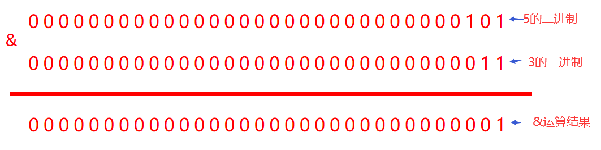
按位&操作符判断奇偶数 （经典面试题）
- 如果 (一个数 & 1) == 1 这个数是奇数
- 如果 (一个数 & 1 )== 0 这个数是偶数
其背后的逻辑
- 根据二进制转 10 进制的公式，除第 1 位之外的每一位上的值都是 2 的倍数
- 也就是第
1位上如果是0就是偶数，如果是1就是奇数
10进制 3 4 5 6 7 8 9 10 二进制 11 100 101 110 111 1000 1001 1010 - 如果一个数是奇数，他的第 1 位是 1，这个数 & 1 永远得到 1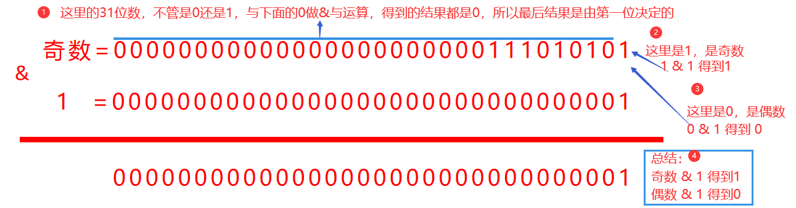
- 按位或
|操作符- 按位或
|操作符会先把值转换为 32 位整数（二进制数），然后再进行位操作 - 按位或
|就是将两个操作数的每一位对齐，然后按下表中的规则，对每一位执行相应的操作第一个数值的位 第二个数值的位 结果 1 1 1 1 0 1 0 1 1 0 0 0 按位或操作的两个位数，只要有一个是 1 就返回 1，两位都是 0 时返回 0
- 按位或
| 或运算过程
>var result = 5 | 3;
>console.log(result); // 7
- 先把 5 和 3 都转换为对应的 32 位二进制数，然后再 1 位 1 位的比较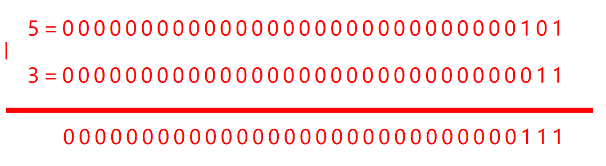
应用：将一个数取整
>var num = 5.467;
>console.log(num | 0); // 5
- 一个数在按位或运算时，会先将其转换为 32 位的整数（二进制），这个过程就会把小数转换为整数
- 然后这个整数
| 0永远得到这个整数。因为0和1与0做或运算，都得到自身。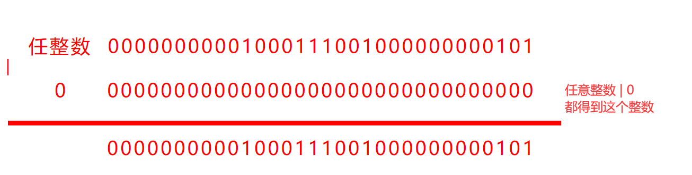 >任何数与 0 做或|运算，最后结果都为这个数的**整数部分**。
- 按位非
~操作符- 按位非
~操作符会先把值转换为32位整数（二进制数）,再运算 - 按位非
~操作符，用来反转操作数对应的位数，所以要进行一次反转 - 根据反转的结果，使用对应的 正数/负数 二进制转十进制的方法
- 其最终结果的呈现是将一个数取反并减 1
- 按位非
~5的计算过程
- 先转换为二进制，
5的二进制是00000000000000000000000000000101- 再进行反转是：
11111111111111111111111111111010- 由于反转后是一个负数，因为第32位为
1，此时使用==负二进制转为十进制==的方法：-1反转+公式法
- 减 1，得到
11111111111111111111111111111001- 再反转，得到00000000000000000000000000000110
- 再用公式法将二进制转换为十进制
- 最后结果就是 6，因为是负数，所以最后结果是
-6
~5的结果是-6，即：取反并减1
~-5的计算过程
- 先将
-5转为二进制(负十进制转二进制，使用除2取余,+1反转法)，得到11111111111111111111111111111011- 反转：
00000000 00000000 00000000 00000100- 由于得到的是正数，所以使用==公式法==将其转为十进制：
1*2*2=4
按位非~应用
- 将一个数（整数）,两次按位非运算，就能将这个数取反
- 推导过程如下：
~~ x = ~(-x-1)=-(-x-1)-1 = x+1-1 = x- 取得一个数的相反数
~x + 1
~x+1 = -x-1+1 = -x
- 按位异或
^- 按位异或
^操作符，会先把值转为32位整数（二进制数）,再运算 - 按位异或
^在做运算时，就是将两个操作数的每一位对齐，然后按下表中的规则，对每一位执行相应的操作第一个数的位 第二个数的位 结果 1 1 0 1 0 1 0 1 1 0 0 0 只有当两个数对应的位都是 1 或都是 0 时，返回 0，其它都返回 1
- 按位异或
运算过程
>var result = 5 ^ 3;
>console.log(result); // 6
- 先把 5 和 3 转换为二进制数，再一位一位来运算，如下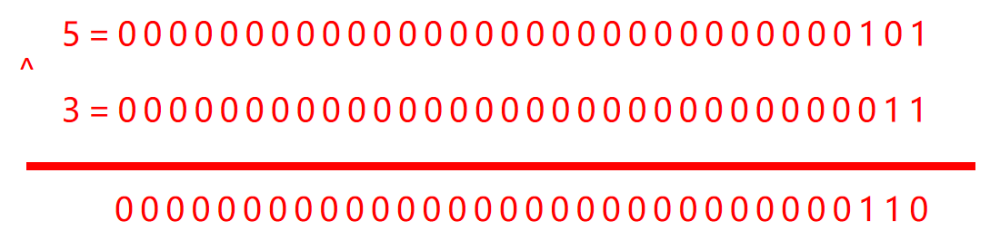
- 再用公式转换成十进制=6
按位异或^（归零律）
- 归零律: 一个数异或自已得到 0 ，即
a ^ a=0，因为只有两个数上对应位数是一样时，才会得到0- 用来判两个数是否相等，如果
a^b=0，则a=b
按位异或^（恒等律）
- 恒等律：
a ^ 0= a（整数），自己异或 0，得到自己
按位异或 ^（自反）
- 自反：
a ^ a ^ a= 0 ^ a= a，一个（整数）异或自身 2 次，得到自身。- 结合律 :
a ^ b ^c = c ^ b ^ a，计算结果一样，与先后顺序无关
应用：按位异或 ^ （用来交换两个数值变量的值）
经典面试题：变量为数字(整数)，在不增加临时变量时，交换两个变量的值,使用
^=
>var a = 5;
>var b = 10;
>a ^= b;
>b ^= a;
>a ^= b;
>console.log(a, b); // 10 5
>/*
> * 整个推演过程如下：
> * 1、 a ^ = b 得到 a = a ^ b
> * 2、 b ^ = a 得到 b = b ^ a 在第1步得到a = a ^ b，则推倒出b = b ^ a ^ b=b ^ b ^ a =0 ^ a =a
> * 3、 a ^ = b 得到 a = a ^ b ,在第1步得到a = a^b,第2步得到b = a,则推倒出： a = a ^ b ^ a = b ^ b ^ a = 0 ^ b = b
> *
> */
位移操作符(>>、<<、>>>)
除了
>>>是无符号的，其他位移操作符都是有符号的
<<左操作符- 左移操作符用两个小于号
<<表示，会按指定的位数将数值的所有位向左移动。 - 左移后，左边移出去的指定位数去掉，右端空出的位数会以
0来填充这些空位。
- 左移操作符用两个小于号
5<<5运算过程如下
- 先把
5转换为二进制数- 再左移5位，把左边超出部分去掉，右侧的空缺用0填充
- 使用公式法，转换为十进制数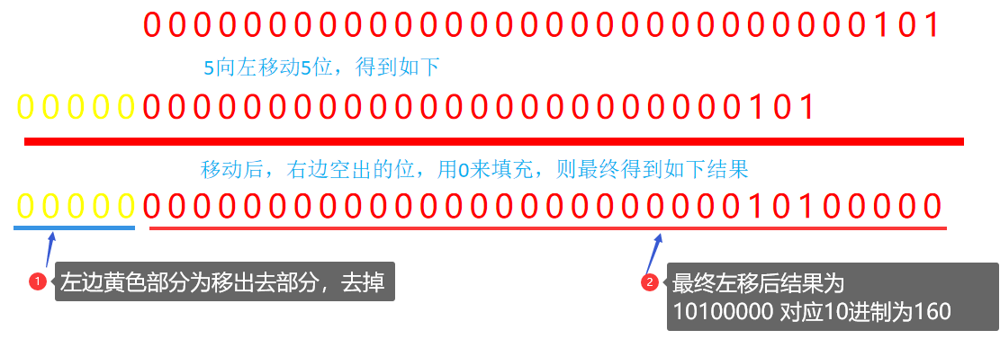
-5<<5的运算过程
- 先把
5转换为二进制数(除2取余)00000000000000000000000000000101- 使用
反转+1法，得到-5的二进制数11111111111111111111111111111011- 保留第32位的符号，左移5位，把左边超出部分去掉，右侧的空缺用0填充
11111111111111111111111101100000- 转十进制
-1反转法+公式法
-1得到：1111 1111 1111 1111 1111 1111 0101 1111- 反转得到：
0000 0000 0000 0000 0000 0000 1010 0000- 公式法：得到
160，由于是负数，所以最终结果为-160
注：
在有符号整数中，第 32 位中的第 32 位是 符号位
- 如果是 0 表示正数
- 如果是 1 表示负数，在左移时，会保留操作数的符号
>>有符号 右移操作符- 有符号右移由两个大于号
>>表示,会将数值的所有 32 位都向右移。同时保留符号（正和负） - 有符号右移，左边空出的位会在左侧，在符号位后用符号位的值来填充这些空位。
- 有符号右移由两个大于号
160 >> 5;//5的运算过程
- 先将
160转换成二进制数- 向右移动5位，用符号位的值来填充第32位后的空缺，右侧超出部分的值去掉不要
- 用
公式法转换为十进制=5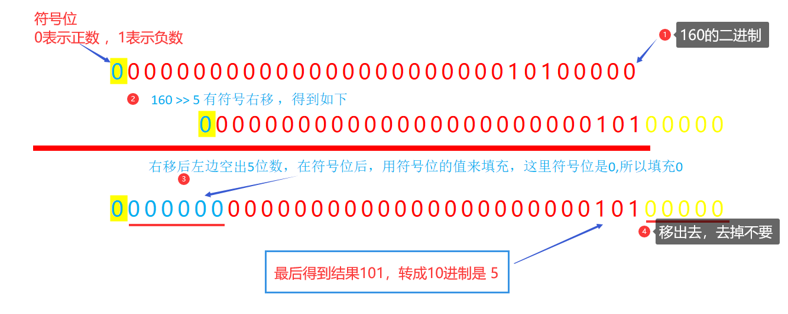
-160 >> 5;//-5的运算过程
除2取余得到160的二进制数：0000 0000 0000 0000 0000 0000 1010 0000反转+1法，得到-160的二进制数1111 1111 1111 1111 1111 1111 0110 0000- 右移5位，用
1填充空缺11111111111111111111111111111011-1反转+公式法转成十进制：
-1得到11111111111111111111111111111010反转得到00000000000000000000000000000101- 公式法，结果=
-5
>>>无符号右移操作符- 无符号右移会将数值的所有32位都向右移，位移造成的左侧空位全补0.
- 所以对于正数，>>>无符号右移 和 有符号右移>>的结果是相同的。因为正数的符号位是 0，所以两者都是补 0 的方式来填充右移造成的空位。
- 但是负数，就完全不一样了。
55 >>> 5;运算过程
- 55 的二进制是：
00000000000000000000000000110111>>>无符号右移5，左侧造成的空位 0 来补，则得到00000000000000000000000000000001- 用公式法得到十进制结果：
5
-55 >>> 5;运算过程
- 55 的二进制是：
00000000000000000000000000110111反转+1得到-55的二进制数11111111111111111111111111001001- 右移5位，用
0填充空缺：00000111111111111111111111111110- 公式法得到十进制结果：
134217726负数，在无符号位移后（至少 1 位），会被转换成一个正数
位移操作符的应用
- 随机数函数
- Math.random()方法，可以得到 0-1 之间的小数，随机生成
- 得到 [a , b] 区间的整数，方式如下:
- 方法1：parseInt(Math.random() * (b - a + 1)) + a;
- 方法2：(Math.random() * (b - a + 1)>>0) + a;用任一位运算符都可以
- 方法3：Math.floor(Math.random() * (b - a + 1)) + a;
- 方法4：Math.round(Math.random() * b)+a;
只有
Math.round是向上取整，四舍五入，可以取到1
推算过程：
要得到 [0 , 5] 区间的整数
- Math.random()方法，可以得到 0-1 之间的小数
- Math.random()*6，可以得到
0-6之间的随机数- 去掉小数，就可以得到[0 , 5] 区间的整数
要得到 [5 , 8] 区间的整数
- Math.random()方法，可以得到 0-1 之间的小数
Math.random()*4，可以得到0-4之间的随机数- Math.random()*4+5,可以得到 5-9 之间的小数
- 去掉小数，就可以得到[5 , 8] 区间的整数
- 如何随机生成随机色（经典面试题）
生成rgb(r,g,b)原理：十进制转rgb
- 利用
Math.random()生成随机数- var r = parseInt(Math.random() * 256);
- var g= parseInt(Math.random() * 256);
- var b = parseInt(Math.random() * 256);
- 用+号拼接出
rgb()的值var rgb="("+r+","+g+","+b+")";- 括号和逗号用引号包裹、用加号拼接，变量不需要
- 利用
生成HEX十六进制颜色原理：
十进制转十六进制
- 随机生成十进制的数字，范围是
0~255- 使用向上取整的
Math.round
Math.round(Math.random() * 0xffffff)- 转换为十六进制
.toString(16)- 不一定是六位数，所以需要在前面自动补
0
.padStart(6, "0")- 加上
#号，使用+拼接
>// rgb颜色随机
>function rgb() {
> var r = Math.floor(Math.random() * 256);
> var g = Math.floor(Math.random() * 256);
> var b = Math.floor(Math.random() * 256);
> var rgb = "(" + r + "," + g + "," + b + ")";
> return rgb;
>}
>
>// 十六进制颜色
>var randomHex = function () {
> return (
> "#" +
> Math.round(Math.random() * 0xffffff)
> .toString(16)
> .padStart(6, "0")
> );
>};
>console.log(randomHex());
>
>// 十六进制颜色
>const randomColor = function () {
> return "#" + Math.random().toString(16).substr(2, 6);
>};
>console.log(randomColor());
- GRB 颜色 转 16 进制颜色
基础知识
| RGB | R 对应范围 | G 对应范围 | B 对应范围 |
|---|---|---|---|
| rgb(0,24,255) | 0-255 | 0-255 | 0-255 |
| 16 进制 | 前两位对应 R，取值范围 | 中间两位对应 G，取值范围 | 最后两位对应 B，取值范围 |
|---|---|---|---|
| #05f3df | 00-ff | 00-ff | 00-ff |

底层原理
将 rgb 的值，转成 32 位的二进制，然后再将 32 位二进制转成对应的 16 进制
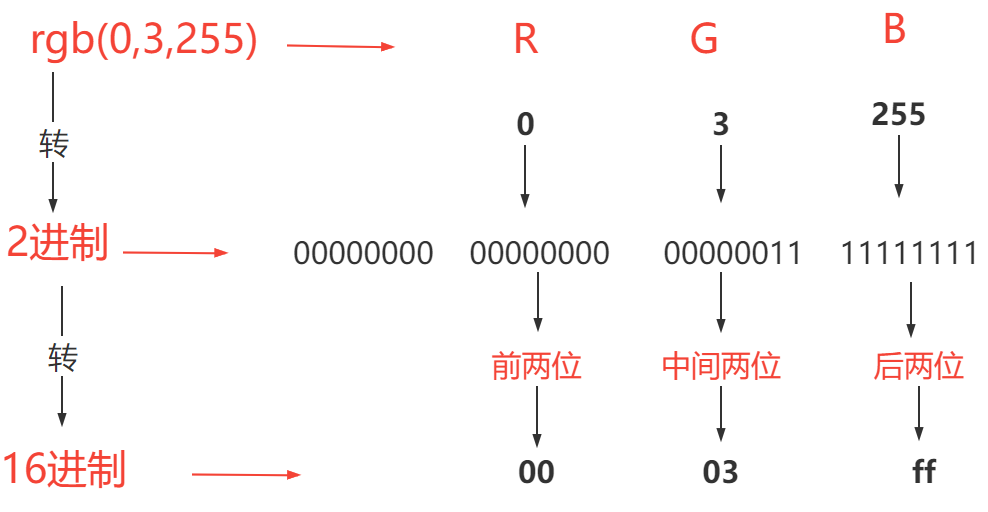
过程分析：
- 分别将rgb的三个值转为二进制，根据十六进制对应位置进行位移，组成一个二进制数，然后将它转为十六进制
- 每一个rgb值对应八位数，因为最大值255转换成八位数是
ffffffff- 三个值拼接成32位的二进制数，最左边八位补0
r的值对应十六进制的前两位，也就是从右往左，第三个八位数，所以要左移16位才能到达g的值对应十六进制的中间两位，也就是从右往左，第二个八位数，所以要左移8位才能到达b的值对应十六进制的最后两位，也就是从右往左，第一个八位数，不用位移- 位移之后怎么拼接？使用按位或
|
- 按位或操作的两个位数，只要有一个是 1 就返回 1，两位都是 0 时返回 0
>// rgb颜色转 16进制颜色
>function colorRGBToHex(rgb) {
> // rgbArr=['','2','33','55']
> var rgbArr = rgb.split(/[^\d]+/);
> // r 移掉丢掉高位 g移掉高位 b 不变
> var color = (rgbArr[1] << 16) | (rgbArr[2] << 8) | rgbArr[3];
> // color.toString(16) 的值，有可能不足6位，则需要向前补0
> var _color = color.toString(16); // 转换成16进制
> // padStart(6,'0'); // 不足6位，前面补0
> return "#" + _color.padStart(6, "0");
>}
>var hexColor = colorRGBToHex("rgb(2,33,55)");
>console.log(hexColor); // #022137
**
.split(/[^\d]+/)**，用非数字的值作为分隔符，将rgb值拆出来
>var hexColor =("rgb(2,33,55)");
>var rgbArr = rgb.split(/[^\d]+/);
>console.log(rgbArr);
>// rgbArr=['','2','33','55','']
>console.log(rgbArr[1]);
>//rgbArr[1]=2
toString 方法的三个作用
- 将其它类型转换为字符串类型
- 检测对象的类型
>Object.prototype.toString.call(arr) === "[object Array]";
- 返回该数字对应进制的字符串
>(10).toString(2); // 10 专为2进制是 '1010'
>(10).toString(16); // 10 转为 16制进是 'a'
- 16 进制转 RGB 颜色
原理：本质就是要把对应 16 进制的
- 前 2 位转成 r 的值，
- 中间 2 位转成 g 的值，
- 后两位转成 b 的值
思路
- 先去掉
#，换成对应的0x- 把十六进制转换为32位的二进制数(只要做位移运算，就会自动把操作数转成 32 位二进制)
- 右移16位，得到
r的二进制数，赋值时自动转成 10 进制- 右移8位，同时
& 0xff，得到g的二进制数，赋值时自动转成 10 进制&0xff，得到b的二进制数，赋值时自动转成 10 进制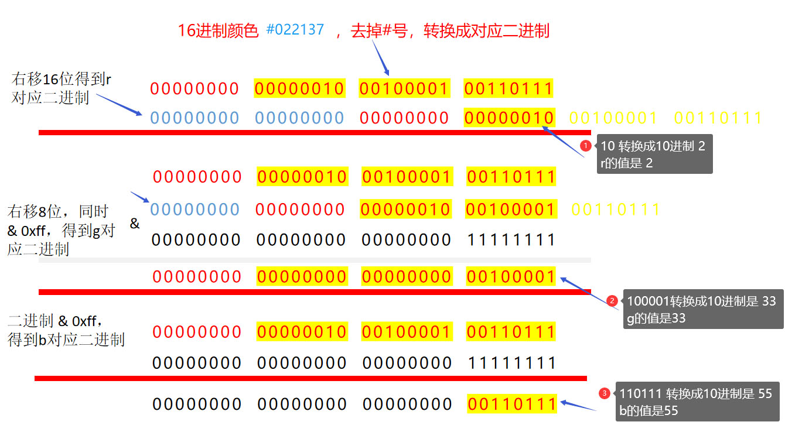
>// 16进制颜色，转rgb
>function colorHexToRGB(hex) {
> var newHex = hex.replace("#", "0x");
> var r = newHex >> 16;
> var g = (newHex >> 8) & 0xff;
> var b = newHex & 0xff;
> return "rgb(" + r + "," + g + "," + b + ")";
>}
>console.log(colorHexToRGB("#022137")); // rgb(2,33,55)